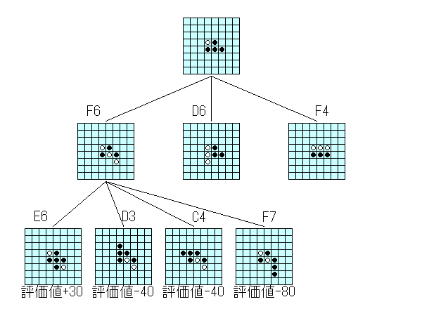
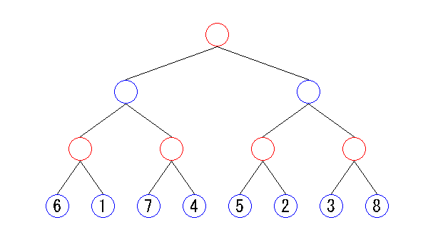

| 2.3 ゲーム木 |
本節以降では、次の手を考えるときにどのようにして先を読むかについて説明します。
先を読むというのは、例えば「自分がここに打ったら相手はここに打ってきて形勢が悪くなる。
では別の手はどうかな？」というようなことを考えて最も良さそうな手を探すことです。
先を読むことを探索と呼びます。
下の図を見てください。
一番上に描かれているのは、黒が初手F5に打った局面です。
ここから探索することを考えてみましょう。
まず、１手目はF6、D6、F4の３通りの手があります。
それぞれ着手したときの局面が２段目に描かれています。
さらに１手目をF6に打った局面では、E6、D3、C4、F7の４通りの手があります。
それぞれ着手をしたときの局面が３段目に描かれています。
１手目をD6、F4に打った局面も先に進めることができますが、ここでは省略しています。
３段目の局面には評価値が書かれています。
このように、ある程度手を進めたら局面の評価を行って手の選択の判断基準にします。
下図では２手進めたら評価値づけを行っています。
もちろん評価値づけをするのは４手先でも１０手先でもよいですし、手数を固定にする必要もありません。

局面の展開と評価値づけ
上図の局面の展開を単純化したのが下の図です。
局面の図と着手位置を省略し、また各局面では２通りの手しかないものとしています。
３手先まで探索を行いました。
赤い丸が自分の手番、青い丸が相手の手番の局面です。
下図のように、局面を展開して木構造にしたものをゲーム木と呼びます。
丸のことをノード（節）、ノードとノードをつなぐ線をブランチ（枝）と呼びます。
特に一番上にあるノードをルート（根）、一番下にあるノードをリーフ（葉）と呼びます。
リーフには数字が書かれていますが、これは局面の評価値です。
自分にとって良い局面である程大きい値がつけられています。
次節からは、ゲーム木を基に手を選ぶ方法について説明します。

ゲーム木